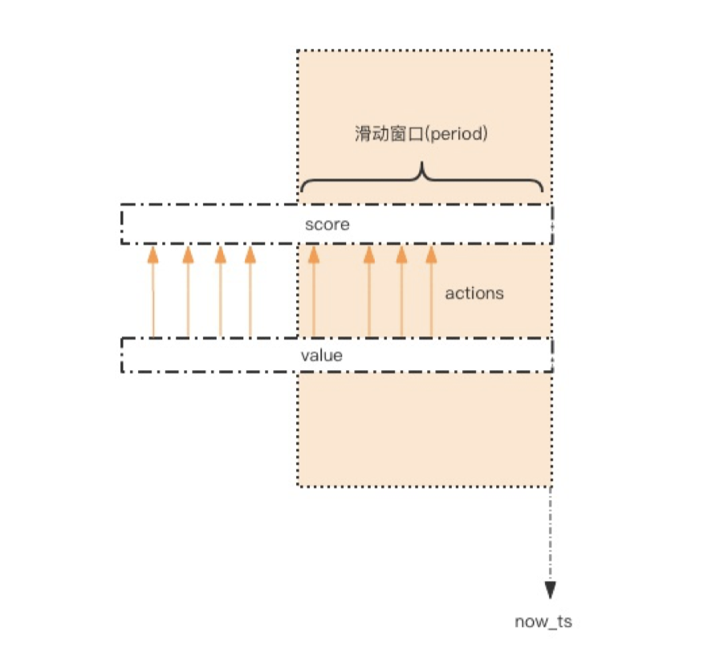
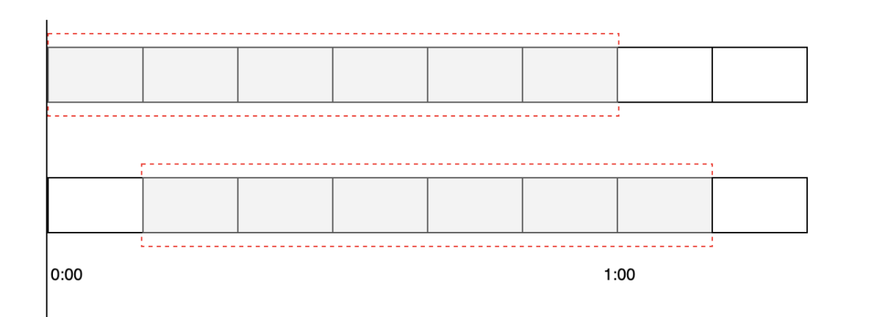
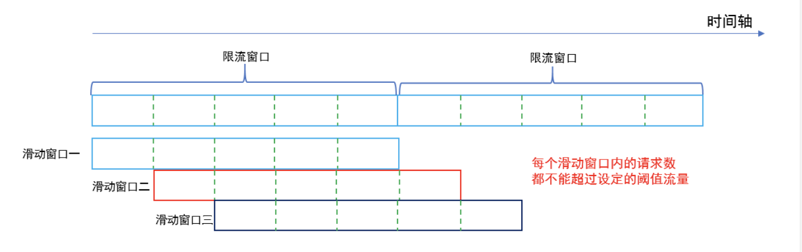
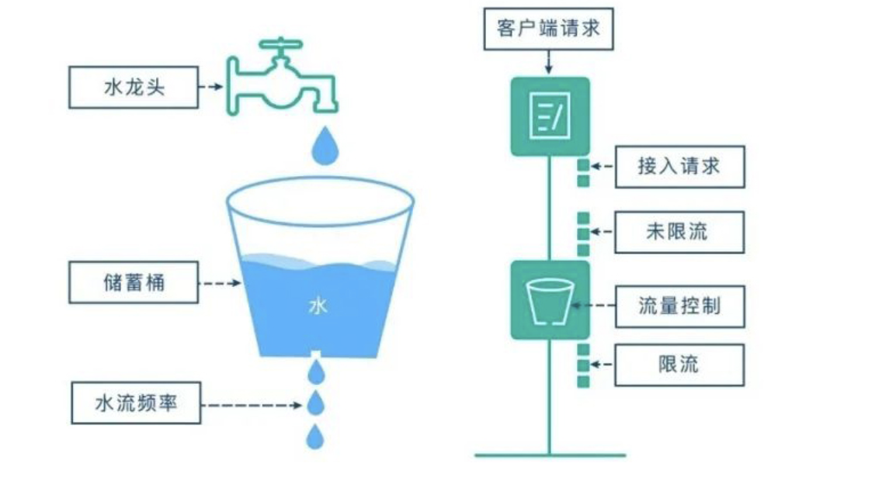
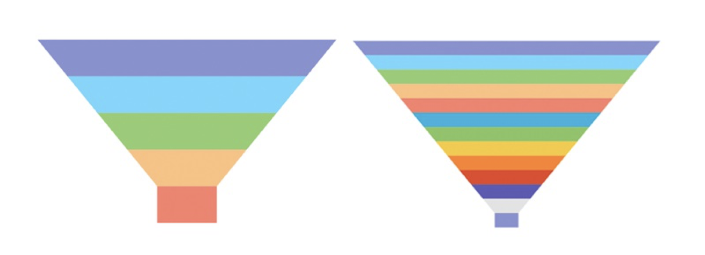
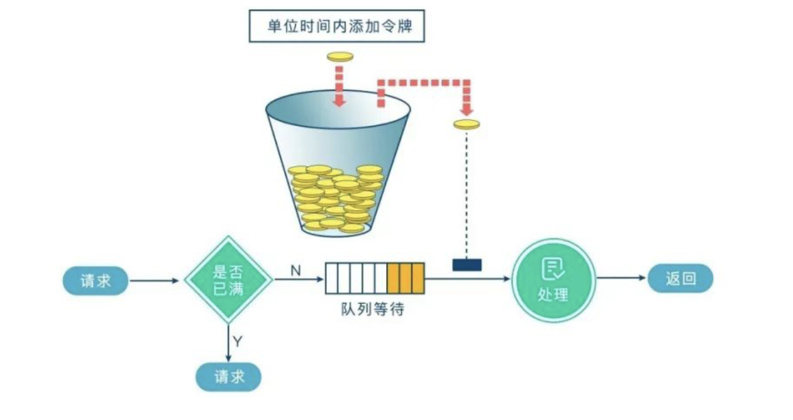

整体概述
开发高并发系统时有三把利器用来保护系统：缓存、降级和限流
缓存目的： 提升系统访问速度和增大系统能处理的容量；
降级： 在意外情况下，保证系统的可用性。
限流：对某些场景进行并发/请求量限制,如：稀缺资源<秒杀>、写服务<评论>、复杂的查询<评论的最后几页>
- 目的：通过对
并发访问/请求进行限速或者一个时间窗口内的的请求进行限速来保护系统; - 常见的限流方向
- 限制总并发数（比如数据库连接池、线程池）、
- 限制瞬时并发数（如nginx的limit_conn模块，用来限制瞬时并发连接数）、
- 限制时间窗口内的平均速率（如Guava的RateLimiter、nginx的limit_req模块，限制每秒的平均速率）；
- 限制远程接口调用速率、
- 限制MQ的消费速率。
- 常见的限流算法
- 计数器
- 漏桶
- 令牌桶
限流
计数器滑动窗口算法
  采用redis zset实现滑动窗口限流，核心：
- 清除时间段外的请求数
- 在时间段内进行数据标记
因为有序集合，很容易按照score进行处理，所以加上时间戳就可是实现.
缺点
- 如果数据量过大，如60s-100w,则需要保存大量的行为记录，消耗大量的存储空间
- 如果第1s,达到访问量，之后就一直被拒绝。❌
代码实现
/** |
返回值
➜ 3限流 git:(main) ✗ ts-node periodLimit.ts |
漏⽃限流
 核心概念
- 漏斗的
容量: 最多存多少数据 - 漏⽃的
剩余空间：当前⾏为可以持续进⾏的数量; - 漏嘴的
流⽔速率代表着系统允许该⾏为的最⼤频率
优缺点
- 实现很简单，对后端的负载是恒定的；
- 无法解决有突增流量的情况
场景
如果你的系统没有突增流量，对于流量绝对均匀有很强的要求，可以采用使用漏斗算法。
令牌桶
参考链接
聊聊高并发系统之限流特技
API 调用次数限制实现
基于Redis的限流系统的设计
我司用了6年的Redis分布式限流器，可以说是非常厉害了！
Redis高并发限流策略之漏斗限流算法
一文搞懂高频面试题之限流算法
「预热桶」限流算法详解(附 Node.js 实现)